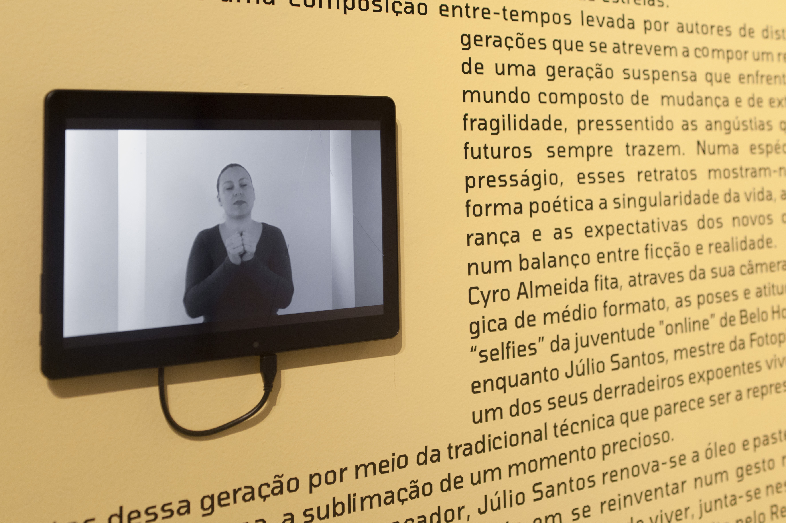
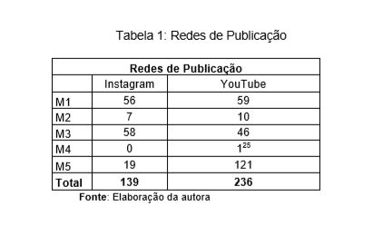
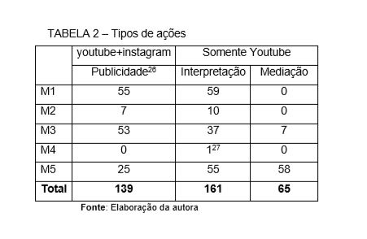
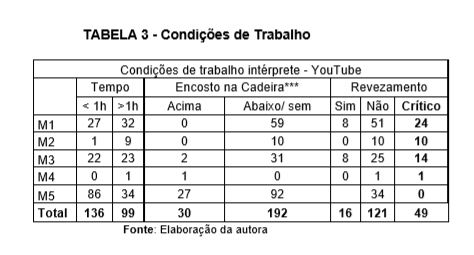
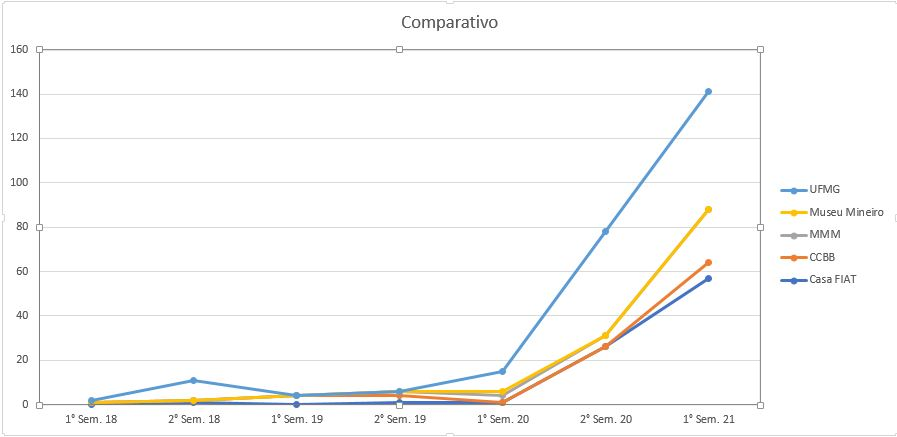
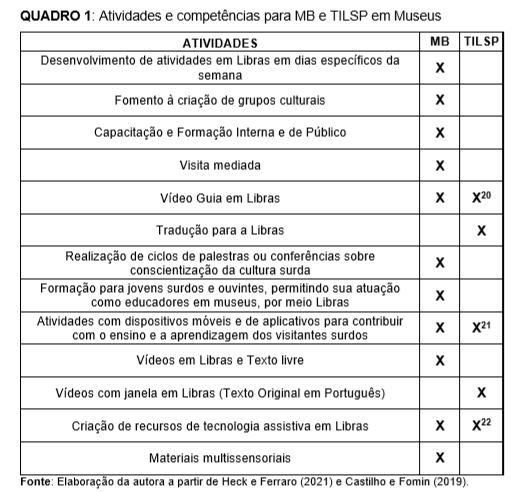

TEMA: A relação profissional dentro do universo da mediação para surdos nos museus do Circuito Liberdade em BH.

Organização dos dados
O conjunto de materiais analisados foram retirados dos sites dos museus no Instagram e no Youtube. Fazendo um levantamento, e retirando-se os materiais repetidos, foram contabilizados 139 conteúdos de publicidade de eventos. Esse levantamento inicial foi necessário para, em seguida, ser possível conhecer o trabalho de TILSP e MB a eles relacionado.
 Percebeu-se, nos museus pesquisados, que ainda se emprega pouco esforço para atingir o público surdo, pois nem todas as divulgações são a ele direcionadas, muitas vezes se limitando à exibição do ícone de acessível em Libras ou, por vezes, constando somente em texto de descrição
  